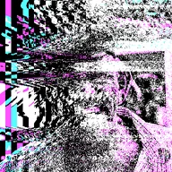

Omino Diffusion+

Tekent de laag opnieuw in een klein palet en sleept de afrondingsfout mee in een richting, voor een glitchy, geditherde look die in beweging tot leven komt.
Instellingen
| Instelling | Type | Bereik | Standaard |
|---|---|---|---|
| Hoek | Hoek | 0° tot 3600° | 0° |
| Sterkte | Getal | 0.01 tot 1 | 1 |
| Stappen | Getal | 1 tot 200 | 35 |
| Foutgewicht | Getal | 0 tot 10 | 0.75 |
| Afname gewicht | Getal | 0% tot 100% | 0% |
| Palet | Keuze | Zwart/wit, RGB posteriseren (2 niveaus), RGB posteriseren (3 niveaus), RGB posteriseren (4 niveaus), Grijs (3 niveaus), Grijs (4 niveaus), CGA groen/rood/geel, CGA cyaan/magenta/wit, CGA blauw/cyaan/magenta/wit, Verzadigen en posteriseren, Aangepast (2 kleuren), Aangepast (3 kleuren), Aangepast (4 kleuren), Aangepast (5 kleuren), Aangepast (6 kleuren) | RGB posteriseren (3 niveaus) |
| Kleur 1 | Kleur | – | #000000 |
| Kleur 2 | Kleur | – | #5555FF |
| Kleur 3 | Kleur | – | #55FF55 |
| Kleur 4 | Kleur | – | #55FFFF |
| Kleur 5 | Kleur | – | #FF5555 |
| Kleur 6 | Kleur | – | #FF55FF |
| Alfa | Getal | 0 tot 1 | 1 |
| Overvloeimodus | Keuze | Normaal, Vermenigvuldigen, Bleken | Normaal |